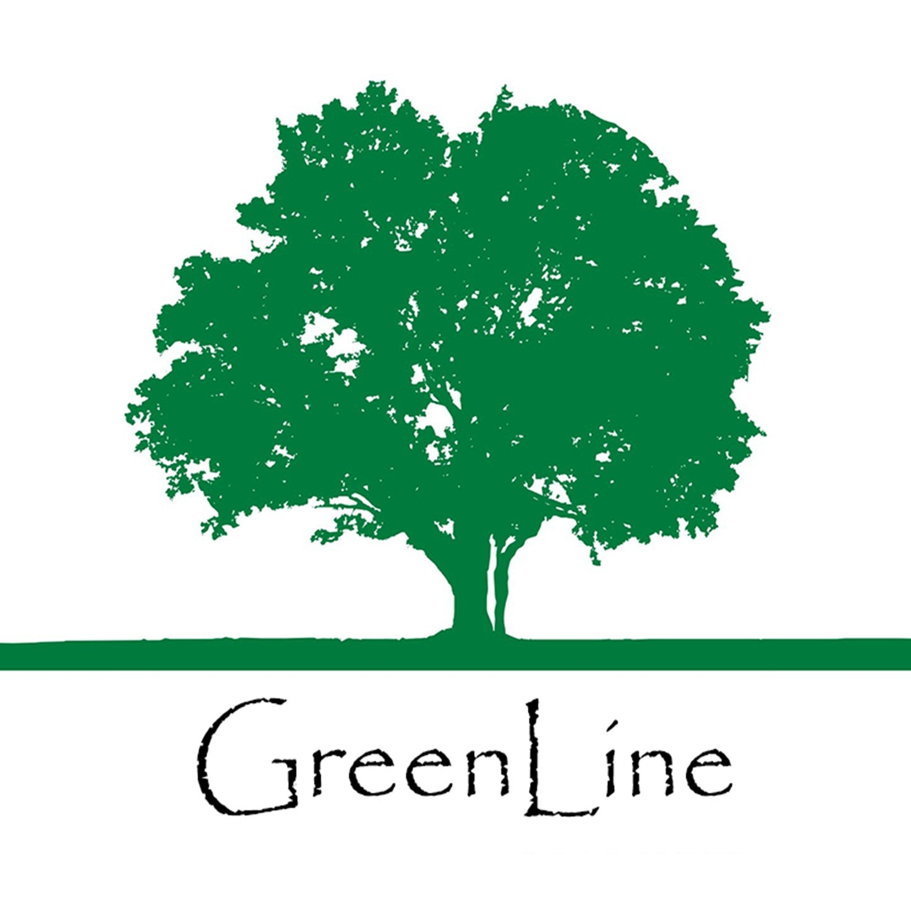
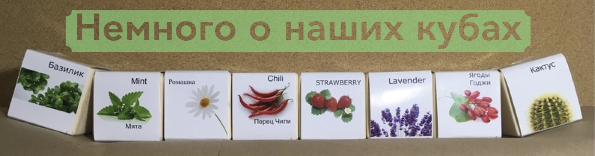

Для того, кто умеет видеть истинную природу вещей,
простое зеленое дерево — большее чудо,
чем дерево из золота или серебра.
Мартин Лютер

Описание
- Наши кубы являются воплощением естественного и уникального подарка
- В этих декоративных деревянных кубиках семена превращаются в цветы, травы и елки
- Каждый кубик изготовлен из высококачественной сосновой древесины, наполнен специальным питательным грунтом и семенами, и запечатан стикером против прорастания
- Большинство используемых нами семян сертифицированы как экологически чистые и закупаются у известных дилеров семян в России
- Наши кубы - это не только декоративная приманка для глаз на кухне, в гостиной или офисе, но и интересная игрушка, ведь выращивание растения также приносит большую радость.
История создания
- В год экологии мы слушали доклад, посвященный проблеме пластикового загрязнения окружающей среды. Мы заметили, что очень часто в домашних условиях растения выращивают в горшках
- В этот же год мы задались целью создать экологически чистый горшок для выращивания растений, который бы ни в чем ни уступал пласиковому
- Материалом для куба мы выбрали сосновую древесины. Сама идея создания горшка из дерева была очень заманчива, поскольку растение можно будет высадить в открытй грунт в горшке, который послужит удобрением
- Для каждого растения из нашего каталога был подобран подходящий грунт
- Мы также уделили большое внимание упаковке и подобрали полностью перерабатываемые материалы
Инструкция по уходу
- Куб содержит семена и специальный грунт
- Вскройте упаковку и отклейте стикер
- Аккуратно налейте 20 мл воды внутрь куба
- Чтобы избежать потери влаги, накройте куб полиэтиленовым пакетом в период прорастания семян
- После 7-14 дней растение начнет прорастать
- В течение 4 недель у Вас появятся первые ростки
- После 6 месяцев Вы можете пересадить растение в горшок или открытый грунт
- Деревянный куб будет медленно разлагаться и послужит удобрением для растения